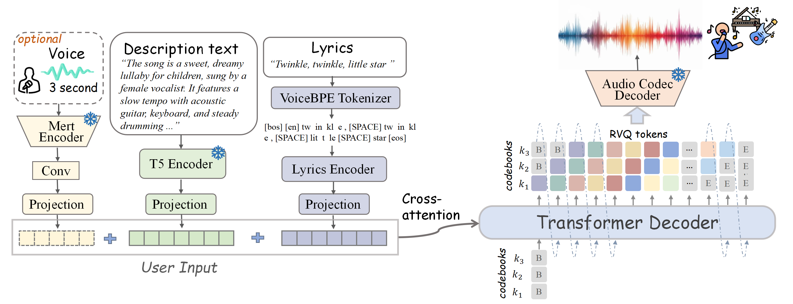

Abstract. Text-to-song generation, the task of creating vocals and accompaniment from textual inputs, poses significant challenges due to domain complexity and data scarcity. Existing approaches often employ multi-stage generation procedures, resulting in cumbersome training and inference pipelines. In this paper, we propose SongGen, a fully open-source, single-stage auto-regressive transformer designed for controllable song generation. The proposed model facilitates fine-grained control over diverse musical attributes, including lyrics and textual descriptions of instrumentation, genre, mood, and timbre, while also offering an optional three-second reference clip for voice cloning. Within a unified auto-regressive framework, SongGen supports two output modes: mixed-mode, which generates a mixture of vocals and accompaniment directly, and dual-track mode, which synthesizes them separately for greater flexibility in downstream applications. To optimize performance, we empirically explore various token pattern strategies for each mode, yielding significant improvements and valuable insights. Additionally, we develop an automated data preprocessing pipeline with effective quality control. To foster community engagement and future research, we will release our model weights, training code, preprocessing pipeline, and annotated datasets. .

In this section, we present samples generated by SongGen in the mixed pro mode.
| Lyrics | Description | Reference Voice (optional) | Generated |
|---|---|---|---|
| I only wanted to be strong to be brave But it's driven everyone away | A female vocalist sings this pop rock song. The tempo is medium with electric guitar and enthusiastic drumming. | ||
| I've got a paper and pen, i go to write a goodbye, and that's when i've got a world of chances for you, i've got a world of chances for you | A female vocalist performs this rhythmic pop rock song, featuring rousing and sparkling guitar riffs. | ||
| Hey, it's a beautiful day. Ain't no clouds in the sky. The sun is shining bright. Let's get up and fly. Come on and take my hand together. We'll explore the beauty of this world forevermore. We can go anywhere to the mountains or the sea. Let's start an adventure you and me. No matter what life throws at us. We’ll be by each other's side. | A male vocalist performs this rap. The tempo is slow with enthusiastic drumming, digital beats, keyboard arrangements, and a catchy vocal riff. The rap is catchy, youthful, insightful, and enthusiastic. | N/A | |
| Hey, it's a beautiful day. No clouds in the sky. The sun is shining bright. | A . | N/A | |
| Sing at the moon and drive through the night. | A . | N/A | |
| And I just can't seem to forget The way your face glows And the way you make me cry. | A . | N/A |
In this section, we present samples of synthesized singing voice. We first provide some samples, where the model incorporating speech data demonstrates superior control capabilities, while the model using solely singing data fails to control attributes or the characteristics are not significant.
| Lyrics | Description | Reference Voice (optional) | Generated |
|---|---|---|---|
| And even if they take my life away, I'ma stay with you, you are my shepherd. | (TODO)The low quality recording features a pop song that consists of mellow female vocals, followed by female background vocals, singing over punchy kicks, claps, shimmering open hats, stuttering hi hats, buzzy synth bass and wide synth pad chords. It sounds aggressive, bright, punchy, energetic and kind of manic due to those hi hats. | N/A |
In this section, we present a subset of samples generated from our MusicCaps test set. For each sample, we provide the lyrics (annotated through our data processing pipeline),description texts, and reference vocal audio for the first three seconds. We showcase the generated audio produced by our model under two different generation modes.
| Lyrics | Description | Reference Voice | GT | Mixed Pro | Interleaving (A-V) |
|---|---|---|---|---|---|
| And I just can't seem to forget The way your face glows And the way you make me cry | A male vocalist sings this smooth Soul melody. The tempo is medium with a mellow piano accompaniment, steady drum machine beats, atmospheric synthesiser and subtle bass with backup vocals. The song is soft, ambient, passionate, emotional, mellifluous ,sentimental and warm. This song is a contemporary R&B/Soul. | ||||
| For the truth and the being as beaming as the moon queen. You bless my future to be with bismillah. For the soul's anguished love and the moment my brothers programmed these drums. | A male vocalist sings this Rap. The tempo is slow with enthusiastic drumming, syncopated piano harmony, digital beats ,keyboard arrangements with vocal backup and a catchy vocal riff. The rap is catchy, youthful, insightful, enthusiastic, intense, passionate, emotional and persuasive. This song is contemporary Rap/Hip-Hop. | ||||
| The work to be done. Let the music play on. I'm feeling the vibe, you know I'm feeling good. | This is a remix of an R&B soul piece. There is a male vocal singing in a laid-back manner joined by an auto-tuned male vocal. The keyboard provides the melody with a gentle bass guitar playing in the background. The rhythmic structure is composed of the acoustic drums and the percussion playing a medium tempo beat. The atmosphere of the piece is groovy and there is a feelgood aura to it. This piece could be used in the soundtrack of a sitcom. | ||||
| Singing Radiohead at the top of our lungs With the boombox blaring as we're falling in | This pop rock song features a female voice singing the main melody. The song starts off with the sound of folding paper. Then the voice starts singing. This is accompanied by rock drums playing the kick drum. The snare is struck at every alternate count. The reverb effect is added to the percussion. There are no other instruments in this song. This song has a happy mood. This song can be played in an intro scene of a coming-of-age movie. | ||||
| The sun is shining, the day is brightening up, happy times are happy times are happy times are here. The sun is shining. | The music features a group of female voices singing a melody in unison. The instrumental consists of only percussion drums, African percussion drums to be precise. A shaker can also be heard sounding on every beat. In the background one can hear water sounds. The overall atmosphere is cheerful and uplifting. |